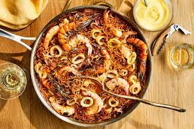

Seafood
Ingredients
2 cups long-grain rice (such as Basmati) 1 tablespoon vegetable oil or butter 1 small onion, finely chopped 2 cloves garlic, minced 1 teaspoon ground turmeric 1/2 teaspoon ground cumin 1/2 teaspoon ground coriander 4 cups chicken or vegetable broth (or water) Salt to taste Optional: a pinch of saffron threads for added color and flavor (soaked in a tablespoon of warm water for a few minutes before using)
Instructions
Here's a step-by-step guide to making flavorful yellow rice: Ingredients: 2 cups long-grain rice (such as Basmati) 1 tablespoon vegetable oil or butter 1 small onion, finely chopped 2 cloves garlic, minced 1 teaspoon ground turmeric 1/2 teaspoon ground cumin 1/2 teaspoon ground coriander 4 cups chicken or vegetable broth (or water) Salt to taste Optional: a pinch of saffron threads for added color and flavor (soaked in a tablespoon of warm water for a few minutes before using) Instructions: Prepare the Rice: Rinse 2 cups of long-grain rice under cold water until the water runs clear. Drain the rice and set it aside. Sauté Aromatic Base: In a large saucepan or pot, heat 1 tablespoon of vegetable oil or melt butter over medium heat. Add 1 finely chopped small onion and sauté until it turns soft and translucent. Add Spices: Incorporate 2 minced cloves of garlic into the pot and cook for an additional minute, stirring constantly to prevent burning. Add 1 teaspoon of ground turmeric, 1/2 teaspoon of ground cumin, and 1/2 teaspoon of ground coriander. Cook the spices with the onions and garlic for about a minute to release their flavors. Combine Rice and Spices: Add the rinsed rice to the pot and stir well, ensuring that each grain of rice is coated with the spiced onion mixture. Add Liquid and Seasoning: Pour in 4 cups of chicken or vegetable broth (or water) into the pot. If using saffron, add the saffron threads along with the soaking liquid to the rice mixture. Season with salt to taste. Cook the Rice: Bring the mixture to a boil, then reduce the heat to low. Cover the pot with a tight-fitting lid and let the rice simmer for about 15-20 minutes, or until the liquid is absorbed and the rice is tender. Rest and Fluff: Once the rice is cooked, remove the pot from the heat and let it sit, covered, for an additional 5-10 minutes. This allows the steam to continue cooking the rice and allows the flavors to meld. Finally, fluff the yellow rice with a fork before serving.>